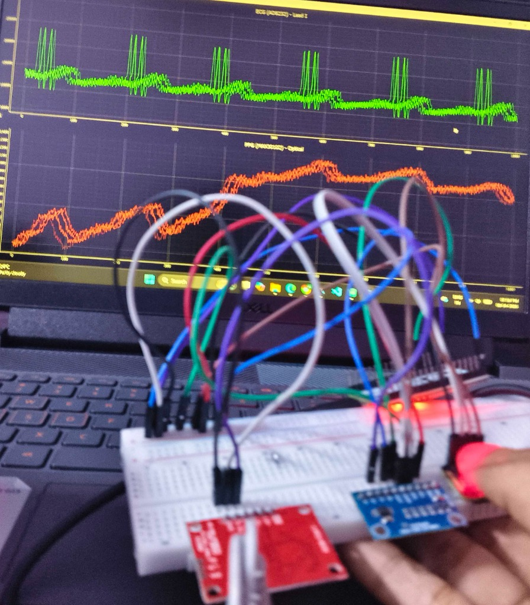
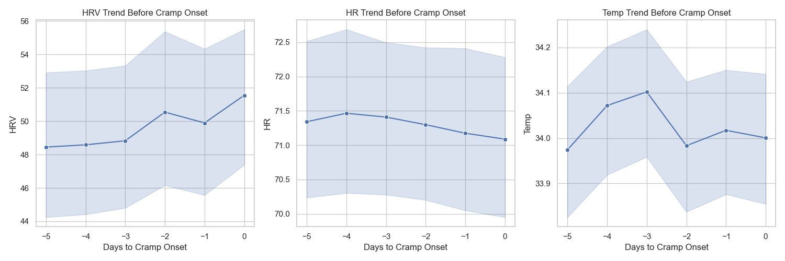

Emotion Recognition via EEG & ECG
I ran a rigorous temporal audit across 14 training subjects (252 trials, 18 stimuli) evaluating 30s trajectories and snapshot windows. While physiology models hovered at median balanced accuracies of 0.426–0.576, the clip-only baseline reached 0.828 for Valence and 0.755 for Dominance.
Multiplicity correction eliminated all apparent regional effects (0 of 1,242 comparisons survived Holm adjustment). The classifiers were not decoding universal emotional signatures—they were fitting stimulus-specific artifacts.

"The physiology models were not decoding emotion—they were memorizing clip artifacts. The stimulus was the real predictor."
DIY ECG & PPG Monitoring System
Instead of relying on ambiguous labels from strangers, I built my own synchronous biopotential (ECG) and optical pulse (PPG) acquisition rig to study my own cardiac dynamics and pulse transit under controlled conditions.
Designing the analog front-end and optical photoplethysmography interface taught me that biopotential signal integrity at the skin interface matters far more than downstream software filtering.

"Hardware design decisions dictate algorithmic ceiling. Clean analog filtering solved noise that downstream ML could never compensate for."
Long-Term Self-Monitoring & Autonomic Discovery
Tracking my own cardiac metrics continuously over multi-week periods revealed clear autonomic signatures. Beyond broad emotion buckets, the signal mirrored cognitive state transitions: making errors, cognitive friction, and study retention quality.
Crucially, resting baselines shifted by over 25 BPM between contexts—proving that fixed population thresholds fail without personalized continuous calibration.

"Autonomic baselines are personal moving targets. Without continuous calibration, static HRV thresholds produce false positives."
Question-Level Cardiac Dynamics in Working Memory
Audited 5,959 Sternberg memory trials with continuous 1000 Hz ECG across 30 participants. Discovered a reproducible evoked deceleration (−1.93 BPM) during mental holding, and verified that attenuated decelerators suffered a selective −8.32% accuracy deficit under speed pressure (p = 0.0084).
Ran an adversarial forensic audit with False Discovery Rate and Linear Mixed Models to eliminate short-window mathematical artifacts and prove statistical authenticity.
"Cardiac deceleration is not noise—it is a functional physiological correlate of mental resource allocation under cognitive load."
Discovering Confounding Variables
Taking models out of controlled protocols and into daily routines exposed major confounders: acute sleep loss suppressed RMSSD by 34%, and subclinical illness produced a +14 BPM resting tachycardia shift without any emotional trigger.
A single-sensor ECG algorithm cannot distinguish cognitive stress from physical fatigue without sleep, temperature, and motion context.
"Autonomic signals cannot be decoded in a vacuum. Context is the difference between real mental stress and a poor night's sleep."
Lunar — Physiological Data & Feature Forensics
- HRV coverage was only ~45.8%, making continuous prediction difficult.
- I discovered a window-truncation bug where daily, weekly, and monthly features became identical.
- I found a feature-scaling issue that amplified tiny numerical noise.
- Quantified cycle phase variation, establishing a realistic Cohen's d = 0.27.
- HRV showed a measurable pre-cramp deviation that survived several robustness checks.

"I stopped asking whether the model worked — and started asking whether the data and features were trustworthy."
Novara — Wearable Health & AI Platform
Synthesizing four years of physiological discovery into a unified wearable platform: combining synchronous dual ECG + PPG, precision skin thermometry, and IMU motion. Cognitive workload estimation runs as an intelligent layer atop continuous clinical monitoring.
Real-world affective intelligence requires closing the loop between low-power edge signal processing, noise immunity, and personal physiological baselines.

"Reliable physiological computing requires the entire stack: analog front-end integrity, multisensor context, and edge intelligence."